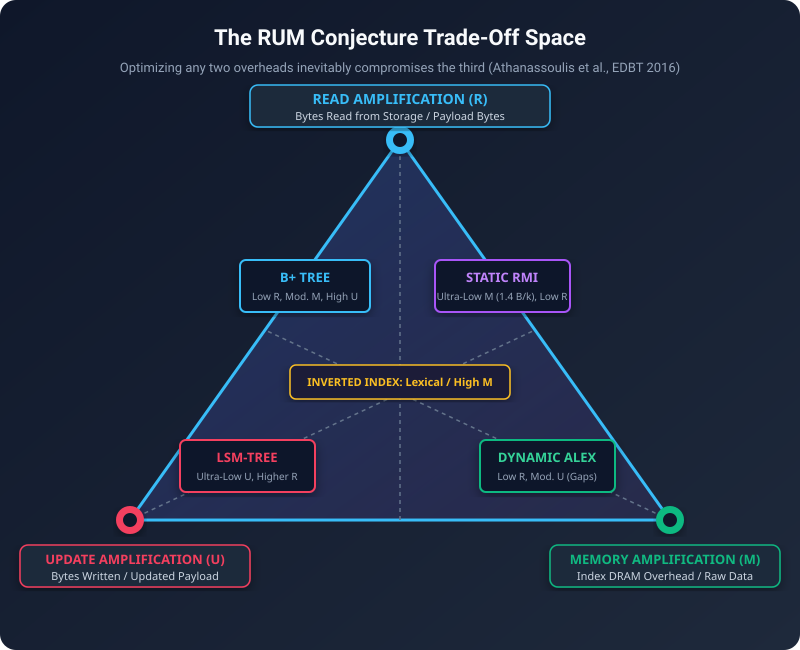
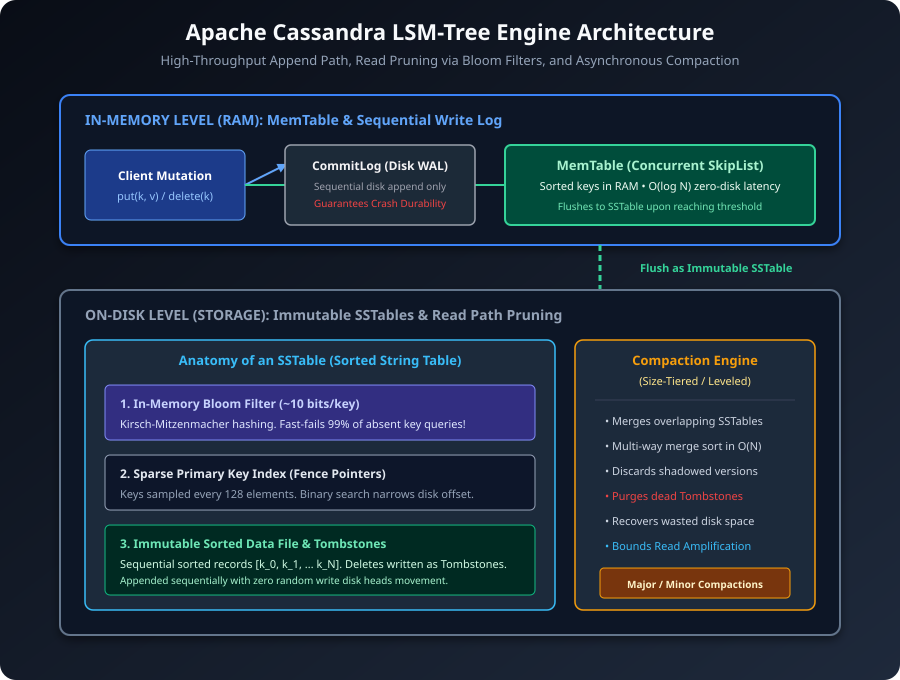
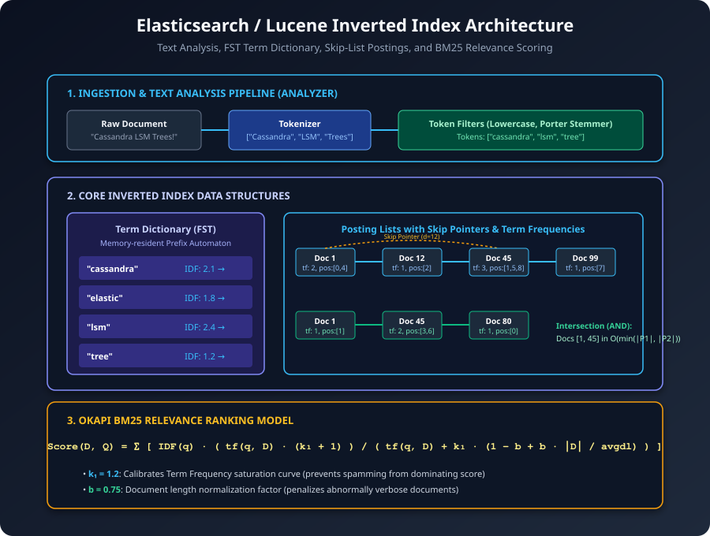
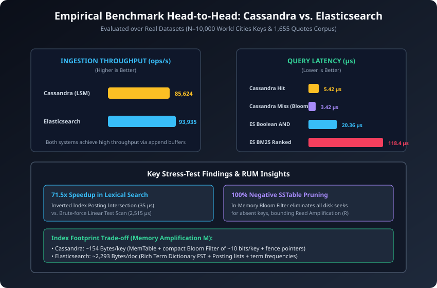

Apache Cassandra (LSM) vs. Elasticsearch (Inverted Index)
An Architectural, Theoretical, and Empirical Analysis Across the RUM Trade-Off Space
Course: Data Engineering (CO5173) – HCMUT
Instructor: Assoc. Prof. Tran Minh Quang
Authors: Nguyen Dinh Hoang Son (2670362) & Nguyen Doan Phuc An (2670249)
Date: 2026 • 15-Minute Technical Presentation

The Storage Trilemma (Athanassoulis et al., EDBT 2016)
Optimizing any two overheads inevitably compromises the third:
- Read Amplification (R): Physical bytes read / logical bytes returned.
- Update Amplification (U): Physical bytes written / logical bytes modified.
- Memory Amplification (M): Auxiliary index footprint / raw data size.
• Cassandra (LSM): Minimizes U via sequential appends; trades higher R.
• Elasticsearch (Inverted): Minimizes R for complex search; trades higher M & U.
Philosophy: Defer Sorting & Convert Writes to Sequential I/O
- In-Memory Layer (RAM):
CommitLog: Sequential disk WAL for crash recovery (zero disk seeks).MemTable: Concurrent SkipList in DRAM (O(log N) point writes).
- On-Disk Layer (Storage):
Immutable SSTables: Data files, sparse fence index, and Bloom filters.Compaction Engine: Asynchronous multi-way merge sort.

DEMO 1: CASSANDRA LSM STORAGE ENGINE
Switching to terminal session to execute live mechanics:
✔ Checkpoint 1: MemTable in-memory SkipList insertion.
✔ Checkpoint 2: Threshold flush & Bloom filter generation.
✔ Checkpoint 3: Existing Hit (5.4 µs) vs. Absent Key Bloom Fast-Fail (3.4 µs, 0 disk I/O).
✔ Checkpoint 4: Tombstone deletion and multi-way merge compaction.
Philosophy: Invert Document-to-Term into Term-to-Document
- The Inverted Principle:
Instead of
Doc_1 -> ["cassandra", "lsm"], store"lsm" -> [Doc_1, Doc_3]. - Four Core Components:
Analysis Pipeline: Character filters, Tokenizer, Lowercase, Porter Stemmer.FST Term Dictionary: In-memory prefix/suffix compressed automaton.Posting Lists & Skip Lists: Sorted doc IDs with skip pointers.Okapi BM25: Probabilistic relevance ranking with length normalization.

DEMO 2: ELASTICSEARCH INVERTED INDEX & BM25
Switching to terminal session to execute live mechanics:
✔ Checkpoint 1: Text Analysis: Tokenization, Lowercase & Porter Stemmer.
✔ Checkpoint 2: Inverted posting list inspection (Term -> [DocID, TF]).
✔ Checkpoint 3: Boolean AND posting list set intersection ("write" AND "search").
✔ Checkpoint 4: Okapi BM25 scored relevance ranking.
✔ Checkpoint 5: Live benchmark: 70x+ speedup over linear scan!
| Metric (5 Trials, µ ± σ) | Cassandra (LSM) | Elasticsearch (Inverted) |
|---|---|---|
| Ingestion Rate | 85,624 ± 6,126 ops/s | 93,935 ± 3,385 docs/s |
| Point Lookup (Hit) | 5.42 ± 0.27 µs | N/A |
| Negative Query (Miss) | 3.42 ± 0.71 µs (Bloom) | N/A |
| Boolean AND Query | N/A | 20.36 ± 3.98 µs |
| BM25 Ranked Search | N/A | 118.40 ± 15.83 µs |
| Index Memory Footprint | 153.7 Bytes/key | 2,292.8 Bytes/doc |
Measured on N=10,000 World Cities keys and 1,655 Quotes corpus with 1 warmup run discarded.

The Golden Rule: Never Force an Engine Outside Its RUM Bounds
- Cassandra Secondary Indexes (2i): Forces scatter-gather queries across every cluster node $\to$ cluster latency collapse.
- Elasticsearch as Primary DB: High write mutations force constant segment merges $\to$ GC pauses and write stalls.
The Production Standard: Dual-Engine CQRS
1. Cassandra (Write Path): Primary System of Record absorbing high-velocity writes with linear horizontal scaling.
2. Change Data Capture (CDC / Kafka): Asynchronously streams commit log mutations.
3. Elasticsearch (Read Path): Builds inverted indexes to serve sub-millisecond BM25 search and faceted analytics.